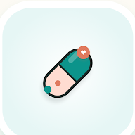

하루약
복약 알림 · 재고 관리
약 먹을 시간을 잊지 않도록
- 화면이 꺼져 있어도 전체 화면으로 알리는 복약 알림
- 매일·요일·N일마다·휴약기 등 다양한 복용 주기, 필요할 때 먹는 약(PRN)
- 홈 화면 위젯과 캘린더로 복용 현황 확인
- 재고 기록과 재고 부족 알림, 데이터 백업·복원
복용 기록은 서버로 보내지 않고 기기 안에만 저장합니다.
일상을 조금 더 편하게 만드는 작은 안드로이드 앱과 게임을 만듭니다. 모든 앱은 무료이고, 회원가입 없이 바로 쓸 수 있습니다.

약 먹을 시간을 잊지 않도록
복용 기록은 서버로 보내지 않고 기기 안에만 저장합니다.
카톡 속 중요한 내용을 공유 한 번으로
메모는 서버 없이 휴대폰 안에만 저장합니다.
월급날 궁금한 숫자를 한 번에
급여 정보는 서버로 보내지 않고 기기 안에만 저장합니다.
출퇴근만 기록하면 이번 달 알바비가
근무·급여 정보는 서버로 보내지 않고 기기 안에만 저장합니다.
이 대출, 매달 얼마씩 갚을까
대출 정보는 서버로 보내지 않고 기기 안에만 저장합니다.
3.3% 뗀 돈, 5월에 돌려받을까
수수료·신고 대행 없는 계산기이며, 수입 정보는 기기 안에만 저장합니다.
네트워크 응답시간을 꾸준히 기록
측정 기록은 기기 안에만 저장되며 외부로 전송되지 않습니다.
스마트폰을 GPS 자전거 속도계로
위치 정보는 속도·거리 계산에만 기기 안에서 사용합니다.
열두 문파의 무공으로 몰려오는 적을 베어라
광고는 원할 때만 보는 보상형 광고뿐입니다.